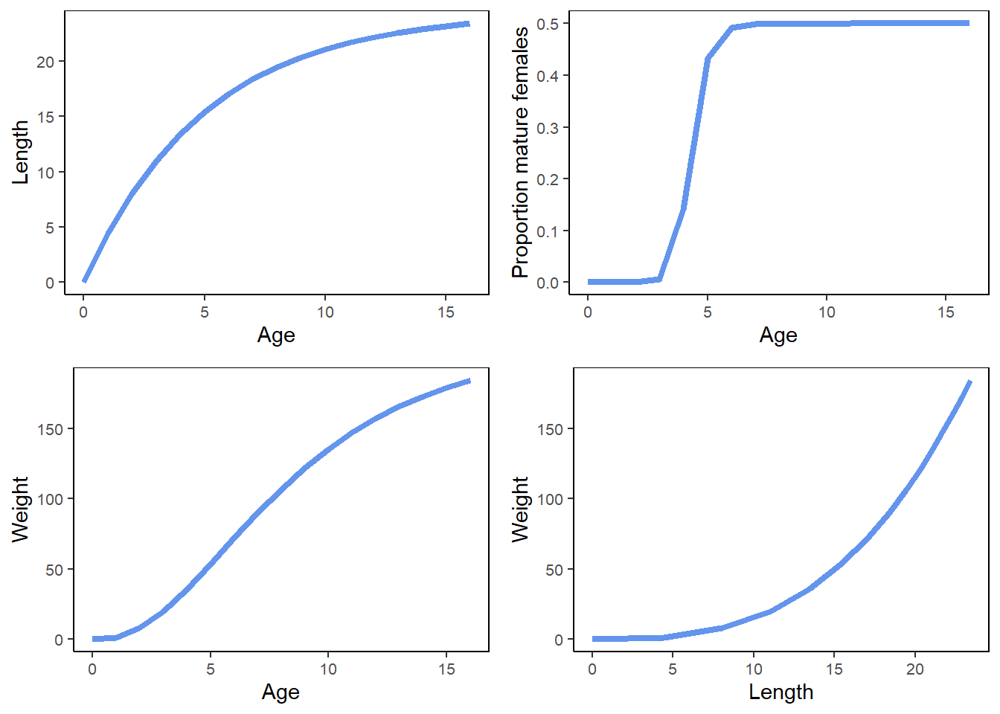
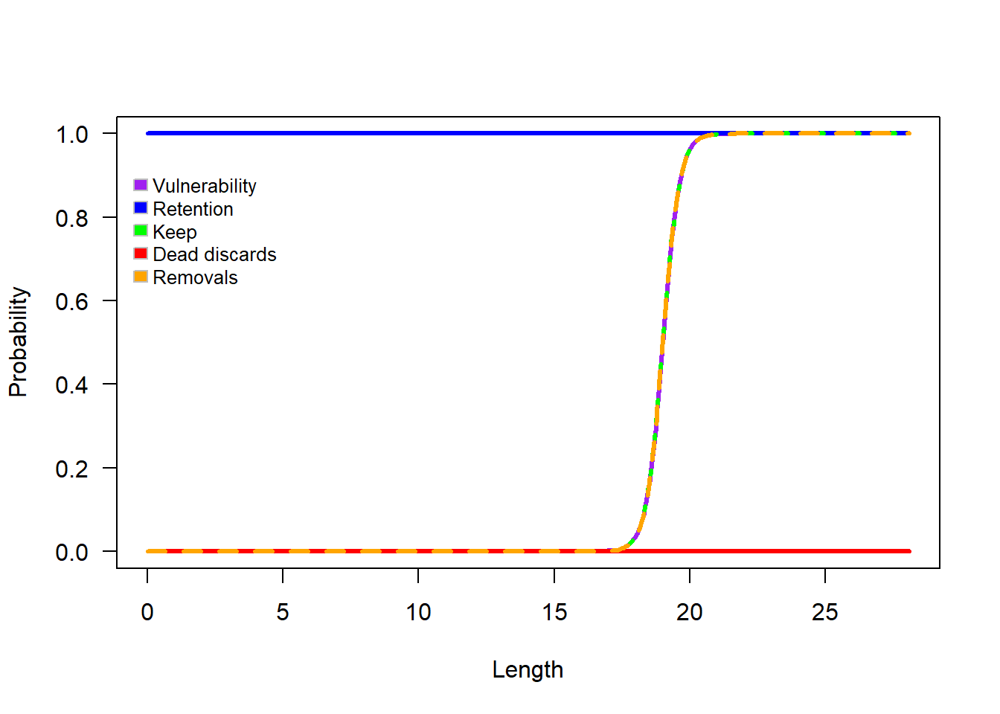

7 Examples
7.1 Honeycomb grouper example
This example illustrates a model with four areas and a suite of management options, including size limits, effort reductions (such as seasonal closures or time-day closures), and rotational spatial closures. All simulations are conducted under the assumption that fishing effort is reallocated from closed areas to open areas, rather than being removed from the fishery.
See Section 2 for details on how to populate the Operating Model.
7.1.1 Populationg the life history
LifeHistoryObj <- new("LifeHistory")
LifeHistoryObj@title<-"Honeycomb grouper"
LifeHistoryObj@speciesName<-"EpinephelusMerra"
LifeHistoryObj@shortDescription<-"example multiple areas"
LifeHistoryObj@Linf<-24.4
LifeHistoryObj@K<-0.2
LifeHistoryObj@t0<- 0
LifeHistoryObj@L50<-14.1
LifeHistoryObj@L95delta<-2.1
LifeHistoryObj@M<-0.29
LifeHistoryObj@L_type<-"FL"
LifeHistoryObj@L_units<-"cm"
LifeHistoryObj@LW_A<-0.016
LifeHistoryObj@LW_B<-2.966
LifeHistoryObj@Walpha_units<-"g"
LifeHistoryObj@Steep<-0.69
LifeHistoryObj@recSD<-0.6
LifeHistoryObj@recRho<-0
LifeHistoryObj@isHermaph<-FALSE
LifeHistoryObj@R0<-100007.1.3 Populating the time and area parameters
# I want to run the low movement scenario
TimeAreaObj<-new("TimeArea")
TimeAreaObj@title = "Test"
TimeAreaObj@gtg = 13
TimeAreaObj@areas = 4
TimeAreaObj@recArea = c(0.067, 0.067,0.067,0.8)#rec pars excel?
TimeAreaObj@iterations = 100
TimeAreaObj@historicalYears = 50
TimeAreaObj@historicalBio = 0.5
TimeAreaObj@historicalBioType = "relB"
TimeAreaObj@move <- matrix(c(
0.9, 0.05, 0.05, 0,
0.05, 0.9, 0.05, 0,
0.05, 0.05, 0.9, 0,
0, 0, 0, 0), nrow=4, ncol=4, byrow=TRUE) #move pars excel?
TimeAreaObj@historicalEffort<-matrix(1:1, nrow = 50, ncol = 4, byrow = FALSE) #excel time-area base - hist effort row 1 > effort pars row 1?7.1.4 Exploring the paramaterization of the OM so far

Figure 7.1: Life history schedules of honeycomb grouper.

Figure 7.2: Logistic selectivity function.
7.1.5 Including stochasticity
StochasticObj<-new("Stochastic")
StochasticObj@historicalBio = c(0.2, 0.6)
StochasticObj@Linf=c(24.4, 29.8)
StochasticObj@K=c(0.2, 0.97)
StochasticObj@L50=c(14.1, 16.8)
StochasticObj@L95delta=c(2.1, 2.5)
StochasticObj@M=c(0.29, 0.43)
StochasticObj@Steep=c(0.69, 0.84)
StochasticObj@histFisheryVul=matrix(c(18.05,19.95,0.86,0.95), nrow=2, ncol=2,byrow=FALSE) #ask bill - stochastic base excel says 1- I took sel_uncert (excel) pars
StochasticObj@sameFisheryVul=TRUE7.1.6 Fishery projections
ProFisheryObj<-new("Fishery")
ProFisheryObj@title<-"Test"
ProFisheryObj@vulType<-"logistic"
ProFisheryObj@vulParams<-c(19, 0.9) # excel fishery-base row3 (is proj?)
ProFisheryObj@retType<-"logistic"
ProFisheryObj@retParams <- c(22, 0.1)#excel fishery-base row3 (is proj?)
ProFisheryObj@retMax <- 1
ProFisheryObj@Dmort <- 07.1.7 The management strategy
Trying to figure out how to implement the 25% effort reduction?
StrategyObj<-new("Strategy")
StrategyObj@projectionYears <- 50
StrategyObj@projectionName<-"projectionStrategy"
# I took effort from row 3 corresponding to strategy 25% red
eff_vector=scan(text=("0 0 0 0 1.125 1.125 1.125 1.125 1.125 1.125 1.125 1.125 1.125 1.125 1.125 1.125 1.125 1.125 1.125 1.125 1.125 1.125 1.125 1.125 1.125 1.125 1.125 1.125 1.125 1.125 1.125 1.125 1.125 1.125 1.125 1.125 1.125 1.125 1.125 1.125 1.125 1.125 1.125 1.125 1.125 1.125 1.125 1.125 1.125 1.125 0 0 0 0 0 0 0 0 0 0 0 0 0 0 0 0 0 0 0 0 0 0 0 0 0 0 0 0 0 0 0 0 0 0 0 0 0 0 0 0 0 0 0 0 0 0 0 0 0 0 0 0 0 0 1.125 1.125 1.125 1.125 1.125 1.125 1.125 1.125 1.125 1.125 1.125 1.125 1.125 1.125 1.125 1.125 1.125 1.125 1.125 1.125 1.125 1.125 1.125 1.125 1.125 1.125 1.125 1.125 1.125 1.125 1.125 1.125 1.125 1.125 1.125 1.125 1.125 1.125 1.125 1.125 1.125 1.125 1.125 1.125 1.125 1.125 1 1 1 1 1 1 1 1 1 1 1 1 1 1 1 1 1 1 1 1 1 1 1 1 1 1 1 1 1 1 1 1 1 1 1 1 1 1 1 1 1 1 1 1 1 1 1 1 1 1"))
# StrategyObj@projectionParams<-list(bag = c(-99 -99 -99 -99
# ), effort = matrix(eff_vector, nrow=50, ncol=4, byrow = FALSE), CPUE = c(1,2), CPUEtype = 'retN') # CPUE is strategy excel proj_CPUE?